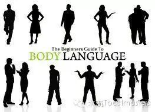
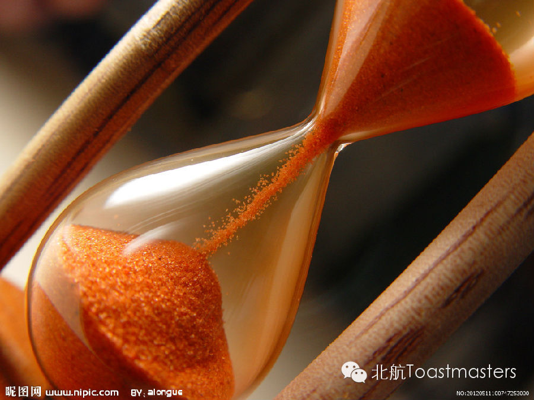

Table Topic
Probably, each one has wondered what makes a winner in life at some time. To get the answer to that question, some may turn to philosophy for help. Surprisingly, western philosophy and eastern one both agree that going beyond oneself constantly makes a genuine winner. Tonight, are you ready to take interesting questions on this topic from Deon?
Don’t Be a Tree. Move like Water in a Stream
Speaker: Red Runyon

Guys, guess what? Red is coming!!!!!
If you have ever participated in the table topic section, I am sure you
know exactly how embarrassing it feels like standing on the stage while
with few and unnatural gestures. Now you have a chance to get tips on
body language from Red, the DTM star, who says “Don’t be a tree. Move
like water in a stream”.
Don’t Let Them Walk off the Cliff
Speaker: Red Runyon

An excellent ending in a public speech delivering will make your performance more impressive and reach the hearts of audience easier. However, many speakers fail to end their speaking appropriately. Red will share his views on ending a speech properly.
====分=====割=====线====
老朋友：点击右上角按钮分享到朋友圈
新朋友：点击标题下方的【北航Toastmasters】关注我们查看历史消息
北航Toastmasters专注于提升演讲能力和领导能力。这是一个增强自信、促进个人成长的舞台。
每周五19:30在北航新主楼A212举办meeting.
我们欢迎每一个感兴趣的朋友前来做客!
路线：回复r即可查看路线地图